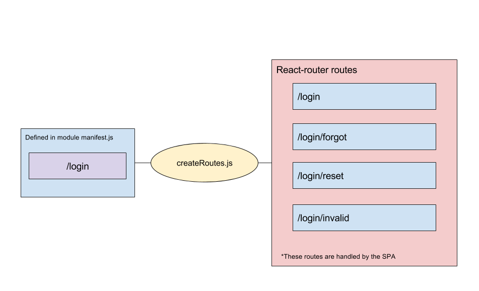

Routing
Routing with thunderball is a multi-tier system that involves routing with both express routes, and using react-router routes.
Configuration
Page Routes
Routing configuration begins with the module's manifest.js file. A simple example of a manifest.js file for a login page may look something like this:
/** manifest.js **/
module.exports = {
name: 'login',
browser: {
page: {
createRoutes: './browser/createRoutes',
path: '/login*',
injectors: [
'../../appInjectors'
]
}
}
};
Take note of two things here:
manifest.browser.page.path: This is the route that will be matched by thethunderballserver, and will be matched byexpress(see: https://expressjs.com/en/guide/routing.html for more about express routing). Note the*in our example path/login*. This says "match anything that starts with/login"manifest.browser.path.createRoutes: This is a path to the module'screateRoutesfile that specifies thereact-routerroutes for the SPA.
Here is an example createRoutes.js file for the same login page:
/** createRoutes.js **/
import App from '../../../app/browser/App';
import React from 'react';
import { Route, IndexRoute } from 'react-router';
import LoginView from './LoginView';
import ForgotPasswordView from './ForgotPasswordView';
import ResetPasswordView from './ResetPasswordView';
import InvalidPasswordView from './InvalidPasswordView';
import NotFoundView from '../../../app/browser/error/NotFoundView';
export default function createRoutes(getState) {
return (
<Route component={App} path='/login'>
<IndexRoute component={LoginView} />
<Route component={ForgotPasswordView}
path='forgot-password'/>
<Route component={ResetPasswordView}
path='reset*' />
<Route component={InvalidPasswordView}
path='invalid*' />
<Route component={NotFoundView}
path='*' />
</Route> );}
(For more information about react-router visit https://github.com/ReactTraining/react-router.)
What's going on here is that we're specifying that "At any route matching /login* (starting with /login), serve up the SPA routes (react-router) routes specified in createRoutes.
It's helpful here to remember at this point that since thunderball "pages" are actually single page apps that contain their own set of react-router routes inside them, when a user navigates inside those routes they're requests are handled by the react-router, and will not be making a round trip to the server.

Example Request
As a simplified example, let's assume that you've created a login page that you would like to display at the url /login (using the configuration above). The routing flow would look something like this:
- The client (browser) requests
/login - The request is received by the
thunderballserver. The route is matched (found) because we specified/login*in our module manifest. - The page is then rendered on the server, and pulls in the routes we've defined in
createRoutes.js. - The rendered page (single page app) is sent to the client as HTML and run in the browser.
Once the browser is running our page (SPA) any requests made to routes inside the SPA (defined in createRoutes, ex: /login/forgot-password) are handled by the page, and a request is not sent to the server.
Page Routes and react-router
When creating links inside your react router, use the <Link> component provided by react-router.
https://github.com/ReactTraining/react-router/blob/master/docs/API.md#link
Example:
<Link to={`/statement/1`} >Statement 1</Link>
When traversing links using other components, like `<Button>` use `router.push`.
Router.push
https://github.com/ReactTraining/react-router/blob/master/docs/API.md#pushpathorloc
<Button
onChange={(e) => {
router.push({
pathname: 'statements/ledger'
query: { statementId: 1}
});
}} />
For more information about react-router visit the documentation at https://github.com/ReactTraining/react-router/blob/master/docs/API.md
Static Routes
Thunderball provides a mechanism for defining static routes to host static content. Consider a module with the following structure:
/myModule
|-/myStaticContent
| index.html
|-manifest.js
and the manifest like this:
/** manifest.js **/
module.exports = {
name: 'outdatedBrowser',
staticDirectories: [ //<-- an array of static directories this module
{ // would like to serve
dir: './myStaticContent',
path: '/my-static-page'
}
]};
With this configuration the myModule module will serve anything in he /myStaticContent directory at the /my-static-page url. In this example we've created index.html inside the /myStaticContent directory, so visiting /my-static-page in a browser will serve the index.html file. Likewise, if `/myStaticContent had any subdirectories, they could be accessed from this path as well.
For example, a file in a subdirectory at /myStaticContent/styles/style.css could be accessed at /my-static-page/styles/style.css
Middleware Routes
Another way to expose routes for a thunderball application is via express middleware. Like static routes and SPA pages, middlewares are specified in you module's manifest.js file. Here's an example manifest.js file that declares a middleware:
module.exports = {
name: 'addHeaderMiddleware',
middleware: [
'./middleware/addHelloHeader' // <-- A path to a file that has the middleware
]
};
In this manifest you can see that the middleware property takes an array of paths to files that contain the middlewares that the module would like to implement.
As you can see, this module doesn't declare page property or a staticDirectories property
NOTE ABOUT MIDDLEWARES: It's important to remember that express middlewares are implemented at the server level, meaning they have the ability to intercept ALL requests to the server and act on them. This could alter functionality outside the scope of the module declaring the middleware whether it's intentional or not. Be mindful of this when implementing middleware in your modules.
Another thing to note about this manifest.js file is that it doesn't have a browser or a staticDirectories property. That's because these are actually optional! A thunderball module doesn't need to provide a SPA route, or static route. It can provide any or all of these. For example, if your module only needs to provide a single middleware or some static content, that's cool. If you're module needs to create a SPA with static content and middleware to support it, that's cool too.
Structure of a middleware
The middleware files specified in the manifest.js must export a function that returns a middleware:
(appConfig, modules, app) => (req, res, next) => void
Where:
appConfig: The application configuration per theconfig.jsfilemodules: An aggregated object of all the module manifests in the applicationapp: The expressappused by the server on which you can bind your middleware
Here is the middleware ./middleware/addHelloHeader from the example above:
module.exports = (manifest, modules, app) => {
return (req, res, next) => {
res.setHeader('X-Greeting', 'HelloThere!')
next();
};
};
As you can see it simply adds a header and follows the convention outlined for express middlewares. Since you are exporting a function that returns the middleware, you can also do any additional initialization or set-up for your middleware here as well.
By providing the ability to create an SPA, host static files, or create and bind express middleware, thunderball provides a full platform for full-stack app development.
More reading
- express: https://expressjs.com/en/4x/api.html
- react-router: https://github.com/ReactTraining/react-router
- react-router-redux: https://github.com/reactjs/react-router-redux